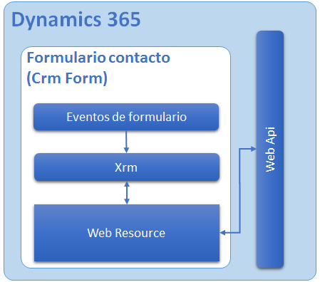
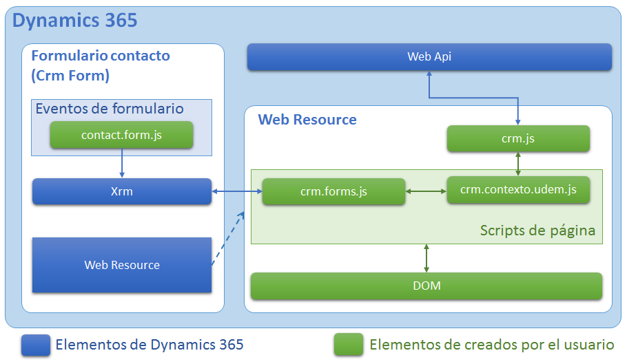
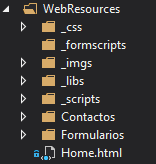

Todo lo que necesitas para comenzar a desarrollar aplicaciones web de lado del cliente para Dynamics CRM.
Proveer una base solida de conocimeinto para el desarrollo de aplicaciones y extensiones para Dynamics CRM, utilizando tecnologías y métodos de desarrollo modernos para facilitar su comprensión.
Este curso no pretende ser un curso de desarrollo de aplicaciones Web, estará enfocado únicamente en medios y herramientas necesarios para lograr completar los objetivos de cada tema propuesto en relación con Dynamics CRM, por lo que es necesario contar con conocimiento previo y bien simentado del desarrollo de aplicaiones Web en todas sus formas.
En esta sección construiremos una pequeña aplicación web que nos permita realizar las operaciones básicas en Dynamics CRM o lo que comunmente se le denomina una aplicación CRUD con la Web Api de Dynamics 365.
En esta sección construiremos un nuevo Web Resource HTML que interactua con los atributos de formulario y daremos un vista rápida a algunas de los eventos que se pueden realizar en un formulario de Dynamics 365.
Aprenderemos a consumir la nueva Web Api de Dynamics 365, la implementaremos en una pequeña librería de jQuery que nos ayude a conectarnos a sus servicios web de una forma fácil y estructurada.
Llevaremos como referencia la documentación en línea de la Web Api:
Referencia: Use la API web de Microsoft Dynamics 365
Una de las aplicaciónes es la misma que utilizamos en el tema de desarrollo .NET, lo único que cambiaremos es la capa de conexión con CRM.
Diagrama de alto nivel
Para comprender mejor como estará estructurada las aplicaciónes veamos los siguientes diagramas:

En el diagrama podemos ver una vista general de la arquitectura, en primer lugar veamos el Web Resource que se encuentra dentro del formulario de CRM, este Web Resource necesita interactuar con el objeto Xrm y la Web Api para acceder a diversa información de dynamics 365.
Podemos ver una pequeña descripción de cada elemento:
Diagrama de un segundo nivel abajo
Ahora veremos a un segundo nivel abajo la aplicación, un poco más de detalle del como se organizará la arquitectura de nuestras aplicaciones permitiendonos comprender como construir la base de desarrollo.

Ahora, en el recuadro de la derecha podemos ver como está estructurado el Web Resource viendo con un poco más de detalle, el como interactua con los otros dos objetos de Dynamics 365.
A continuación se explica cada elemento:
Ahora veremos como están organizadas las carpetas y archivos que generaremos en la solución para facilitarnos el mantenimiento y el desarrollo.
Estructura de carpetas

¿Conectarse a Dynamics 365?
Si vemos el el diagrama del punto 1.1 - Arquitectura de la applicación, nos damos cuenta que el Web Resource se encuentra enbebido en un formulario de Dynamics 365, por lo tanto el Web Resource se encuentra dentro de Dynamics 365 y no requiere de una conexión como tal, pero si es necesario consultar la Web Api desde el mismo dominio, esto quiere decir que el Web Resource, no puede ser una página HTML externa a Dynamics 365.
URL Web Api
La URL de la Web Api se encuentra definida con la siguiente estructura:
Actualmente la versión de la Web Api es la 8.2, y debe de estar precedida por la letra v. Ej. v8.2
El método HTTP para hacer una consulta aun listado de registro de entidades es GET.
La estructura de la url para realizar la consulta a un listado de registro de entidades es la siguiente:
Cuando la petición es por algúna petición HTTP desde un lenguaje de desarrollo es necesario agregar las siguientes cabeceras HTTP:
Para ver más información relacionada con las consultas a la Web Api, vea la siguiente referencia:
Referencia: Consultar datos utilizando la API web Referencia: Recuperar y ejecutar consultas predefinidas
La estructura de la url para crear un registro de entidad es la siguiente:
y es necesario pasar el objeto json que deseamos crear en el Body del mensaje:
Para ver más información relacionada con la creación de registros con la Web Api, vea la siguiente referencia:
Referencia: Cree una entidad usando API web
La estructura de la url para realizar la consulta a un registro de entidad es la siguiente:
Para ver más información relacionada con la consulta a la Web Api, vea la siguiente referencia:
Referencia: Recuperar una entidad usando API web
La estructura de la url para actualizar un registro de entidad es la siguiente:
y es necesario pasar el objeto json que deseamos actualizar en el Body del mensaje:
Para ver más información relacionada con la actualización de registros con la Web Api, vea la siguiente referencia:
Referencia: Actualizar y eliminar entidades mediante la API web
La estructura de la url para realizar eliminar un registro de entidad es la siguiente:
Para ver más información relacionada con la eliminación de un registro en la Web Api, vea la siguiente referencia:
Esta herramienta más que una sola herramienta, es una caja de herramientas de apoyo en desarrollo de aplicaciones con Dynamics 365:
Entendiendo el XrmToolBox
Las actividades que podemos realizar de forma general con el Xrm Tool Box son:
Para descargar esta herramienta e información adicional acerca del XrmToolBox y sus plugins, vea la siguiente referencia:
Referencia: XrmToolBox
En esta sección mencionaremos las herramientas del XrmToolBox que usaremos y mencionaremos algunas otras utilizadas muy comunmente en el desarrollo de aplicaciones para Dynamics 365:
Metadata Browser
Esta herramienta nos permite conocer de una forma fácil toda la metadata de las entidades de Dynamics 365.
¿Que podemos hacer?
Web Resource Manager
Esta herramienta nos permite llevar la administración de todos los Web Resources que se encuentran registrados en Dynamics 365 o especificamente en una solución.
Otras herramientas
A continuación se mencionan otras herramientas que son muy comunmente utilizadas, sin embargo no son el total de herramientas que contiene el XrmToolBox.
Para practicar los ejercicios anteriores deberemos de crear una aplicación CRUD para Cuentas pero ahora utilizando la Wen Api de Dynamics 365.
Se recomienda copiar el código HTML de las páginas anteriores y adaptarlo para Cuentas.
Actividades
Para completar esta práctica se deben terminar las siguientes actividades:
Las formas de interacción con Dynamics 365 presentadas en este curso no representan la totalidad de operaciones distintas que se pueden llevar a cabo, existen múltiples formas de realizar acciones por medio de la Web Api y cada una ayuda de forma distinta a resolver una necesidad para Dynamics 365.
La intención de esta sección es dejar documentación de referencia a muchas otras formas de usar la Web Api de Dynamics CRM.
Referencias
Información adicional relacionada a la Web Api: Componer solicitudes HTTP y administrar errores Asociar y anular la asociación de entidades mediante la API web Usar funciones de la API web Usar acciones de la API web Ejecute las operaciones por lotes mediante API web Suplantar a otro usuario utilizando la API web Realizar operaciones condicionales mediante la API web
Información adicional relacionada a los Web Resources: Recursos web para Microsoft Dynamics 365
Desarrollo con Javascript y la Web Api: Uso de JavaScript con Microsoft Dynamics 365 Introducción a la API web de Microsoft Dynamics 365 (JavaScript del lado cliente) Bibliotecas de JavaScript para Microsoft Dynamics 365
Desarrollo con C# y la Web Api: Iniciar un proyecto de la web API de Dynamics 365 en Visual Studio (C#) Ejemplo simple de inicio rápido de la API Web (C#) Use la biblioteca de código auxiliar de la API web de Microsoft Dynamics 365 (C#)
Aprenderemos a acceder a os atributos de un formulario de Dynamics 365 dede un Web Resource y conoceremos como escribir menejadores de eventos(Event Handlers) en los formularios y atributos de formulario de Dynamics 365.
Para más inforacióm acerca de las consideraciones a la hora de escribir código en los formularios de Dynamics 365, vea la siguiente referencia:
Referencia: Escriba código para formularios de Microsoft Dynamics 365
Podemos condicionar que un cierto código javascript se ejecute en un determinado tipo de formulario y en cierto evento de formulario.
Tipo de formulario
Para obtener el tipo de formulario debemos de usar el siguiente método:
Podemos ver una tabla con los tipos de formulario que maneja Dynamics 365, en la siguiente referencia:
Referencia: Tipos de formulario de Dynamics 365
Eventos de formulario y aributos
Para ver como acceder a los eventos de formulario y atibuto vea la referencia al punto 1.7 - Eventos de atributo y formulario de la guia de desarrollo del SDK .NET. Existen varios eventos que pueden ser manejados por código javascript en un formulario y mencionaremos algunos a continuación:
En esta lista se mencionan los más comunes, para ver más eventos que maneja Dynamics 365, vea la siguiente referencia:
Referencia: Usar formularios y eventos de campo
Es posible leer el valor de un atributo de formulario o incluso asignar o cambiar el valor de un atributo a travez de código javascript de formulario o de Web Resource.
Leer el valor de un atributo
Para leer el valor de un atributo de formulario utilizamos el siguiente método:
El parámetro arg se refiere al nombre del atributo que en este caso es el nombre de esquema del atributo.
Podemos ver una tabla con los tipos de valores que maneja Dynamics 365, en la siguiente referencia:
Referencia: Valor de un atributo de formulario
Asignar o actualizar el valor de un atributo
Para asignar o actualizar el valor de un atributo de formulario utilizamos el siguiente método:
El parámetro arg se refiere al nombre del atributo que en este caso es el nombre de esquema del atributo y el parámetro value es el valor que se desea asignar al atributo.
Para ver más detalle acerca de como asignar el valor a los atributos, vea la siguinete referencia y dirijase al apartado setValue.
En esta seccion veremos como ejecutar el guardado de un formulario desde código javascript de forma síncrona y asiíncrona.
Guardado síncrono
Para guardar el formulario de forma síncrona utilizamos el siguiente método.
El parámetro que recibe este método se define de la siguiente manera:
Para ver más detalle acerca del guardado síncrono, vea la siguinete referencia:
Referencia: Guardar síncronamente un formulario.
Guardado asíncrono
Para guardar el formulario de forma asíncrona utilizamos el siguiente método.
Veremos a detalle cada uno de los parámetros:
Para ver más detalle acerca del guardado asíncrono, vea la siguiente referencia:
Referencia: Guardar asíncronamente un formulario.
Obtener el tipo de guardado de un formulario
Es posible obtener el tipo de guardado de un formulario desde el contexto de ejecución de los formularios de Dynamics 365.
Para ver más detalle acerca de los tipos de guardado, vea la siguiente referencia:
Referencia: Tipos de evento de guardado.
En esta seccion veremos como pasar valores de los atributos de un formulario a un Web Resource desde código javascript.
Evento OnChange
Para ejecutar código personalizado en un evento de Dynamics 365 es necesario crear los controladores de eventos en un archivo de recursos web (javascript) y cargalo en el formulario. A continuación describiremos los pasos para asignar un manejador de evento a un evento de atributo:
Si desea saber más acerca del Contexto de ejecución, vea la siguiente referencia:
Referencia: Contexto de ejecución (referencia del lado del cliente)
Acceder al contenido de un iFrame
En Dynamics 365 podemos acceder al contenido de un Web Resource por código javascript tratandolo como un iFrame.
Hay dos formas de obtener un iFrame o Web Resource desde un formulario de Dynamics 365.
Donde el parámetro attrName es el nombre de esquema del atributo.
Para practicar los ejercicios anteriores deberemos de crear un controlador de evento nuevo.
Las formas de interacción con Dynamics 365 presentadas en este curso no representan la totalidad de operaciones distintas que se pueden llevar a cabo, existen múltiples formas de realizar acciones por medio del código de cliente y cada una ayuda de forma distinta a resolver una necesidad para Dynamics 365.
La intención de esta sección es dejar documentación de referencia a muchas otras formas de usar el código de cliente de Dynamics CRM.
Información relacionada al desarrollo del lado del cliente Uso de JavaScript con Microsoft Dynamics 365 Referencia de programación del lado del cliente Escriba código para formularios de Microsoft Dynamics 365 Abrir formularios, vistas, diálogos e informes con una dirección URL
Modelo Xrm.Page Use el modelo de objeto Xrm.Page Contexto del lado del cliente (referencia del lado del cliente) Xrm.Page.data (referencia del lado del cliente) Xrm.Page.data.entity (referencia del lado del cliente) Atributo Xrm.Page.data.entity (referencia de cliente) Xrm.Page.ui (referencia del lado del cliente)
Información relacionada al guardado de datos. Guardar argumentos de evento (referencia del lado del cliente)